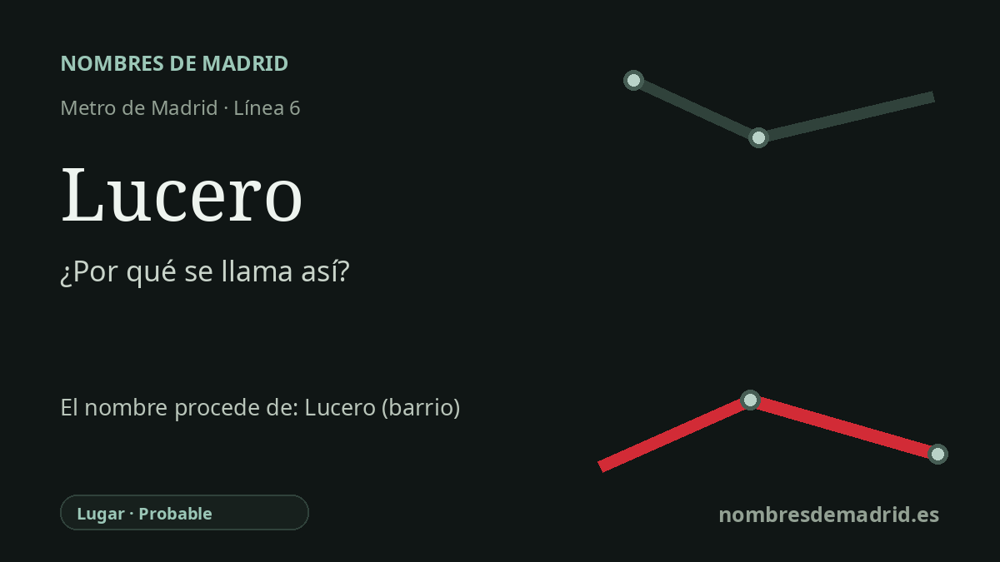

Publicado el · Investigación de Nombres de Madrid · Cómo verificamos cada origen · 7 fuentes consultadas
Respuesta rápida
La estación de Lucero toma su nombre del barrio de Lucero, en el distrito madrileño de Latina. El nombre del barrio ya aparece en uso municipal a mediados del siglo XX, pero no consta una explicación documental de por qué aquel asentamiento recibió ese topónimo.
La historia del nombre
La estación de Lucero toma su nombre del barrio de Lucero, en el distrito de Latina, al que da servicio. El Consorcio Regional de Transportes identifica Lucero como estación de la línea 6, con accesos por la calle de Cebreros y la calle de las Higueras, dentro de la geografía cotidiana de este barrio del oeste madrileño.
El origen más antiguo del nombre del barrio es menos seguro. En español común, lucero designa el planeta Venus o un astro que parece grande y brillante; la RAE deriva la palabra de luz y el sufijo -ero. Ese significado ayuda a entender el topónimo, pero no demuestra por sí solo por qué este barrio madrileño recibió tal nombre.
El topónimo ya existía antes de la estación de Metro. Un boletín municipal del 1 de noviembre de 1954 menciona el barrio del Lucero en el entorno de la carretera de Extremadura, la Colonia de los Ferroviarios y las viviendas de posguerra. Los resúmenes históricos locales describen también Lucero como una antigua zona rural y suburbana marcada por las huertas junto al arroyo Luche, el ferrocarril Madrid-Almorox, la inmigración de posguerra y el desarrollo urbanístico de los años sesenta.
La conexión con Metro llegó después. La historia de infraestructuras de la Comunidad de Madrid explica que el cierre de la línea 6 entre Laguna y Ciudad Universitaria creó seis estaciones nuevas, entre ellas Lucero, y puso en servicio la línea circular en mayo de 1995. Por tanto, Lucero pertenece al gran cierre circular de la línea 6 en los años noventa, no a la prolongación Oporto-Laguna de 1983.
La interpretación mejor respaldada es, por tanto, prudente: la estación se llama así por el barrio de Lucero, mientras que el motivo original del nombre del barrio sigue sin verificarse. El sentido astronómico de lucero puede citarse como significado de la palabra, pero las teorías sobre una finca, una persona o un punto de observación del cielo deben tratarse como hipótesis hasta localizar un expediente de denominación, un documento de propiedad o un mapa antiguo concluyente.